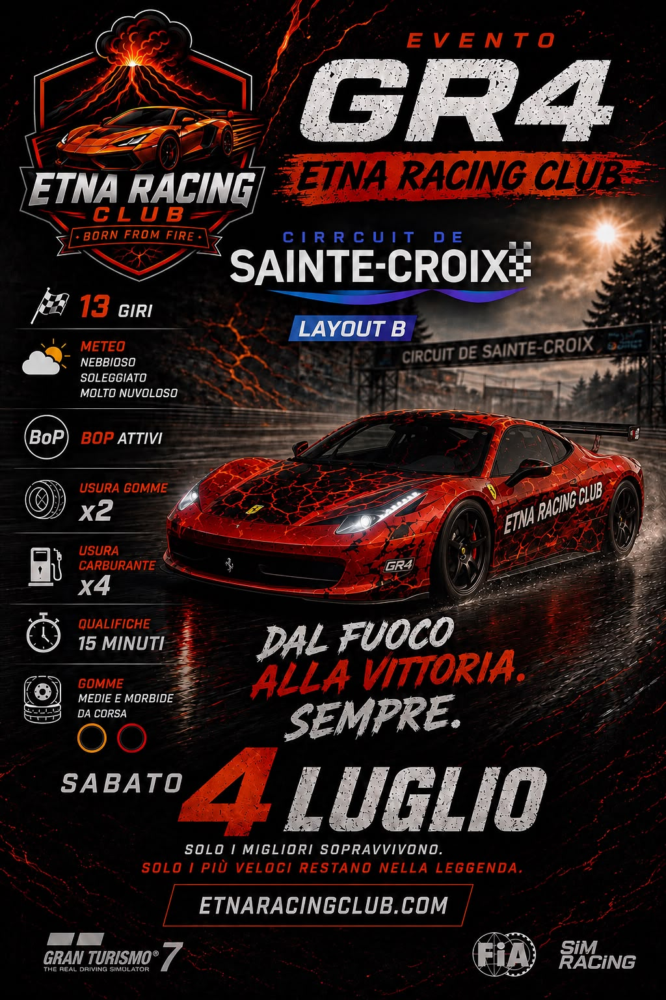
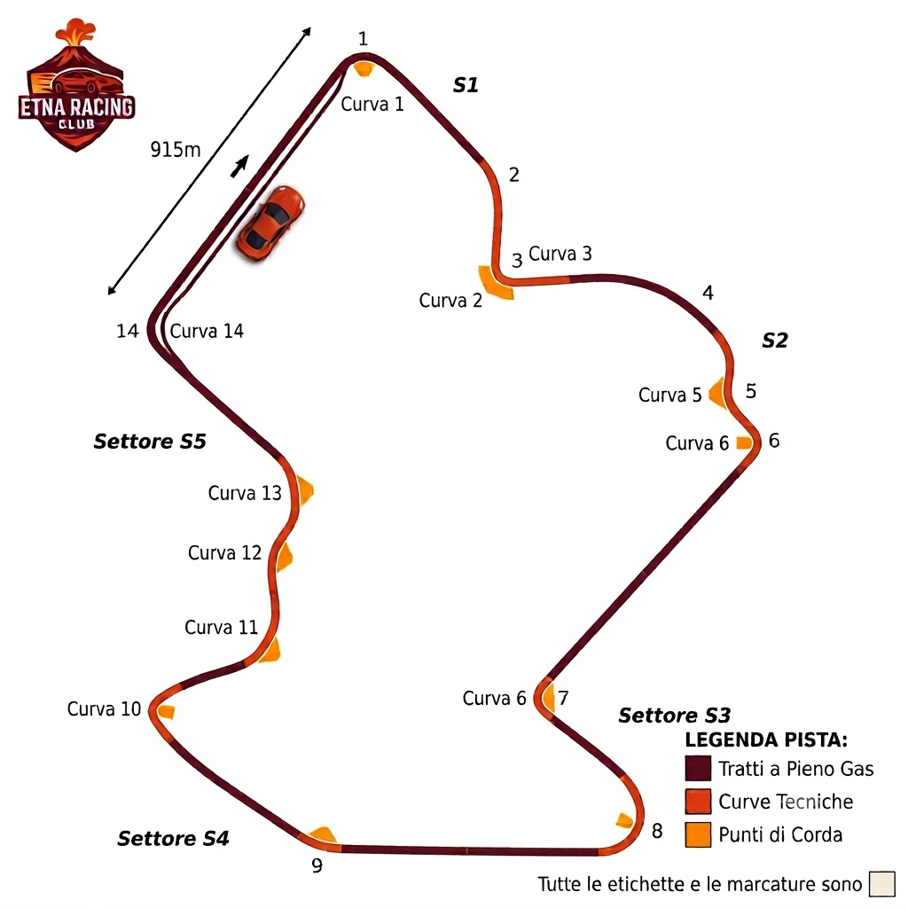

<<Benvenuti a questa prima puntata di Etna Racing Live, è il vostro Andrea De Adamich che vi saluta, tra poche ore i piloti dell’Etna Racing Club scenderanno in pista per l Evento incredibile delle Gr 4 con la Ferrari 458 Italia, macchina nostrana e bellissima da guidare; passo immediatamente la parola al mio caro amico ed esperto Giorgio Piola per l analisi del circuito>>
<<Ciao Andrea e un saluto affettuoso a tutti i telespettatori di questo nuovo programma, devo dirti caro Andrea che non vedevo tanto fervore nel motorsport da parecchio tempo, ho avuto modo di chiacchierare con i due ideatori di questo club e avevano letteralmente le idee che gli uscivano dagli occhi, credo proprio che possiamo aspettarci grandi gare da loro e da tutto il Team>>
<<Hai assolutamente ragione Giorgio, ho avuto la tua stessa impressione vedendoli girovagare estasiati i paddock in questi ultimi giorni e non sono riuscito a fermarli, scappavano da tutte le parti, ma adesso ti lascio la parola, spiegaci cosa ha di particolare la pista di oggi>>
<<Grazie, la pista di Sainte-Croix è situata nel sud della Francia, a circa 100 Km da Cannes, il layout B, quello che useranno i piloti oggi, è lungo 7 chilometri e 62 metri, ha un dislivello totale di 44 metri, 14 curve e verrà percorso 13 volte, ha caratteristiche da pista da andatura medio veloce grazie ai suoi rapidi saliscendi e per l emozionante breve tratto sopra il ponte ma, strano a dirsi, non ha tantissimi punti di sorpasso e lì starà nell’abilità dei piloti ma anche nello sfruttare gli eventuali errori altrui le probabilità di sorpasso>>
<<Grazie mille Giorgio, impeccabile come sempre, adesso passerei la linea a Giorgia Peroni nel paddock, la vedo già in compagnia di diversi piloti, a te Giorgia>>
<<Ciao Andrea e grazie per la linea, si qui sono insieme ad un po’ di questi ragazzacci che stanno fremendo all’idea di scendere in pista, inizio da Antonio, uno dei 2 fondatori di questo Club, Antonio sei riuscito a provare questa auto in questa pista? Come ti sei trovato?>>
<<Si, sono riuscito a provare la Ferrari 458 Italia 2 volte, la prima insieme a Pierpaolo e Carmine, loro andavano un po’ meglio perché conoscevano meglio di me il tracciato, io sentivo la macchina molto scivolosa con guida in stile kart ma su una macchina di 300 cavalli da tenere in pista soprattutto nei tornati più stretti e nelle curve un po’ più larghe, non sono molto soddisfatto dei tempi che sono riuscito a fare ma il divertimento avendo tutti la stessa auto sono sicuro sarà al 100% e prevedo che i distacchi saranno minimi nonostante io mi veda un po’ più indietro rispetto agli altri a causa di questi ultimi mesi in cui ho corso molto meno degli altri>>
<<Grazie Antonio, altra domanda per te, hai già deciso la strategia che userai?>>
<<Allora, la strategia per questa gara non mi è ancora abbastanza chiara perché ho ancora poco feeling con questa macchina e dovrò capire il mio stile di guida che vedo ancora un po’ troppo aggressivo con conseguente consumo delle gomme eccessivo e quindi devo capire se mi trovo meglio con le morbide o con le medie e scegliere di conseguenza con quali delle due mescole iniziare la gara>>
<<Molto chiaro, grazie, ultima domanda per te, cosa ti aspetti da questa gara?>>
<<Di una cosa sono sicuro, il divertimento sarà assicurato grazie al fatto che l auto sarà uguale per tutti e la differenza maggiore la farà la nostra guida, è risaputo che ogni pilota ha la sua pista e la sua auto preferita e io non vedo l’ora di scendere in pista>>
<<Grazie mille Antonio, ora vorrei parlare con Carmine, stesse domande anche a te>>
<<Ciao Claudia e un saluto a tutti, poso dirti che si, sono riuscito a provare l auto e dai tempi che ho visto tra me e i miei compagni posso dire che siamo tutti vicini e molto competitivi, per quanto riguarda la strategia sono indeciso se partire con medie o morbide, probabilmente deciderò durante il warm-up, infine spero di piazzarmi tra i primi 3>>
<<Grazie Carmine, come sempre di poche parole ma piuttosto precise; mi sposto più avanti, vedo che Stefano sta per mettersi il casco e vorrei avere delle risposte anche da lui – Ciao Stefano, posso farti delle domande al volo?>>
<<Ma certo cara Claudia, dimmi pure>>
<<Sei riuscito a provare auto e pista?>>
<<Scusami se sorrido ma c’è stato un piccolo errore con il mio manager e ieri abbiamo provato l auto, ma sul layout sbagliato e speravo quindi di riuscire adesso ad entrare in pista per fare qualche giro anche perché con l auto ho notato subito un buon feeling e credo potrò adattarmi piuttosto velocemente>>
<<Cose che possono capitare Stefano, l importante è essere adesso nel posto giusto, ma dimmi, riesci ad immaginare che strategia potresti usare o lo vedrai tra poco?>>
<<Purtroppo no, non so davvero cosa farò, consumi vari mi sono ancora sconosciuti>>
<<Capisco perfettamente, però dimmi, cosa ti aspetti da questa gara?>>
<<Come prima cosa puro divertimento e spero di salire sul podio ehehe>>
<<Chiaro come l’acqua il nostro Stefano che lasciamo andare a fare qualche giro su questa pista infernale, andiamo avanti, voglio farmi due risate con quel mattacchione di Claudio – Ciao e benvenuto, qualche domanda al volo, sei riuscito a provare auto e pista?>>
<<Si, l’ho provata ed è proprio una bella macchina che si guida bene, sembra cattiva ma invece è molto stabile, circuito molto interessante, bello e prevedo una gara combattuta>>
<<Hai scelto la strategia?>>
<<La strategia giusta è in fase di definizione, conteranno molto anche fattori come vento, numero di piloti in pista perché più siamo più l’asfalto si riscalda e più si consumano le gomme, quindi vedremo cosa succederà>>
<<Non ti chiedo altro Claudio, ti vedo piuttosto pensieroso – passiamo a qualcun altro, c’è Fabio qui vicino, vorrei sapere da lui se è riuscito a provare auto e pista>>
<<Ciao Claudia e un caloroso abbraccio a tutti quanti, posso dirti che si, sono riuscito a provare l auto in pista, le sensazioni sono positive, il tracciato è divertente ma richiede molta precisione soprattutto ne punti dove è facile perdere tempo, c’è ancora qualcosa da rifinire ma il feeling generale è buono>>
<<Mi fa piacere per te Fabio, ti vedo ottimista, ne approfitto per chiederti se hai già deciso la strategia da usare>>
<<Ebbene si, ho un’idea della strategia ma deciderò gli ultimi dettagli poco prima della gara in base a come si evolverà la situazione, l obiettivo sarà essere costante e limitare gli errori>>
<<Concordo con te, e ti chiedo infine, cosa ti aspetti da questa gara?>>
<<Mi aspetto una gara molto combattuta, il livello del Club è alto e credo che ogni posizione andrà conquistata giro dopo giro. Se riuscirò a mantenere un buon ritmo penso di potermi togliere qualche soddisfazione, non pretendo di arrivare tra i primi ma cercherò di arrivare tra i primi 10, per me sarebbe già ottimo>>
<<Ringraziamo Fabio, è stato molto esaustivo e passiamo al prossimo, vedo Giovanni – ehi Gio, volevo chiederti se sei riuscito a provare auto e pista>>
<<Si, mi sono allenato e la pista mi piace, mi sento competitivo nonostante non conosca i tempi degli altri ma penso gireremo su tempi simili, credo sarà una bella gara>>
<<Lo vedremo, ma vedo che hai le idee piuttosto chiare, quindi ti chiedo, hai pensato una strategia? E cosa ti aspetti dalla gara?
<<Strategia sulla difensiva all inizio visto che ultimamente ho avuto degli incidenti proprio poco dopo gli start, credo starò un po’ largo anche se dipende anche dalla posizione di partenza che occuperò; mi aspetto una bella gara competitiva, ho da poco visto Fabio muoversi molto bene in questa pista e credo vada tenuto d occhio>>
<<Grazie mille Giovanni, procediamo e solo adesso sono riuscita ad avvicinare l'altro fondatore del Club, Pierpaolo e anche a lui vanno le stesse domande fatte fino ad ora, sei riuscito a provare pista e auto?>>
<<Buongiorno Claudia, che dire, ho provato auto e pista, la pista la conoscevo già, anche se non evoca in me ricordi entusiasmanti, l auto invece mi ha molto sorpreso positivamente, ha un bel motore e si guida piuttosto bene, penso di aver fatto dei tempi più che discreti>>
<<A te non chiederei nemmeno se hai pensato a qualche strategia, immagino già tu abbia passato notti in bianco per deciderla>>
<<Ahahaha, non ci sei andata tanto lontana, si, penso di aver deciso cosa fare, ma penso anche che ci siano altri fattori che possano entrare in gioco, come ad esempio il risultato delle qualifiche>>
<<Ben detto, quindi cosa ti aspetti da questa gara?>>
<<Mi aspetto una vittoria schiacciante, no scherzo, ho visto un livello veramente molto alto da parte di tanti piloti, il minimo errore può essere decisivo, e io sono famoso per le mie “pierpaolate”>>
<<Grazie mille anche a te, credo di aver finito il mio lavoro Andrea, ti ripasso la linea>>
<<Grazie Claudia, e ottimo lavoro come sempre, riprendo la linea qui in studio per chiedere subito a Leo Turrini un veloce pronostico per questa gara>>
<<Ciao Andrea e grazie per avermi invitato in questo splendido studio, per quanto riguarda il pronostico posso azzardare che 2 cose potranno decidere il risultato finale, la partenza e l’evitare errori grossolani, credo comunque che Carmine abbia qualche possibilità in più grazie alla sua guida pulita e priva di errori>>
<< Grazie mille Leo, condivido la tua analisi, e vorrei adesso chiedere a Giorgio Terruzzi se ha qualche storia da raccontare su questa pista>>
<<Buongiorno mio caro amico Andrea e un affettuoso saluto a tutti i nostri amati telespettatori, questa pista non è molto usata nell ambito del Motorsport ma l anno scorso è stata sede di una delle più belle e accese lotte di questo Club, i primi 4 sono arrivati al traguardo distanziati di appena 10 secondi, sintomo che questa pista non permette molto facilmente fughe ma anzi è predisposta per lotte agguerrite, che è quello che ci aspettiamo per la gara di oggi>>
<<Incredibile, ricordo quella gara, è stata spettacolare e tutti noi ci auguriamo possa ripetersi una situazione simile; adesso dal vostro Andrea De Adamich è veramente tutto, l appuntamento è tra poche ore nella pista di Sainte-Croix layout B, che vinca il Migliore>>
